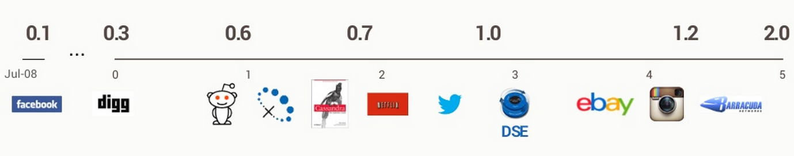
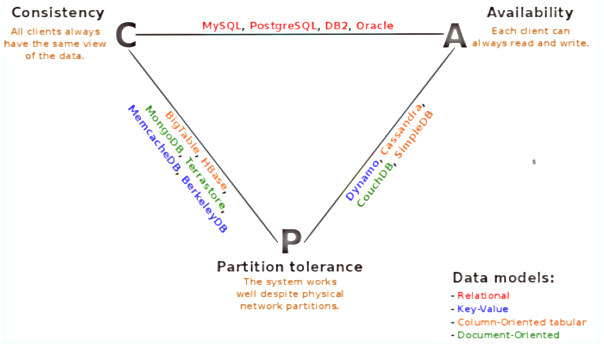

Jiří Kremser < jkremser@redhat.com >
#rhq on Freenode
Latest release: 2.0.6 / March 10, 2014
Licence: Apache License v2.0

CREATE TABLE person (
id uuid PRIMARY KEY,
name varchar(255),
homepage varchar(255)
);
CREATE TABLE person_email (
user_id uuid REFERENCES person,
email varchar(255)
);
SELECT * FROM person NATURAL JOIN person_email;
CREATE TABLE person (
id uuid,
name text,
homepage text,
emails set<text>,
PRIMARY KEY (id)
);
UPDATE person SET emails = emails + {'a@b.c', 'foo@bar.baz'}
WHERE id = 550e8400-e29b-41d4-a716-44665544a000;
TTransport tr = new TFramedTransport(new TSocket("localhost", 9160));
TProtocol proto = new TBinaryProtocol(tr);
Cassandra.Client client = new Cassandra.Client(proto);
tr.open();
client.set_keyspace("MyKeyspace");
ColumnParent parent = new ColumnParent("person");
// read one row with row key equal to "1"
SlicePredicate predicate = new SlicePredicate();
SliceRange sliceRange = new SliceRange(ByteBuffer.wrap("".getBytes("UTF-8"), ByteBuffer.wrap("".getBytes("UTF-8"), false, 10);
predicate.setSlice_range(sliceRange);
List<ColumnOrSuperColumn> results = client.get_slice(ByteBuffer.wrap("1".getBytes("UTF-8"), parent, predicate, ConsistencyLevel.ONE);
for (ColumnOrSuperColumn result : results) {
Column column = result.column;
System.out.println(toString(column.name) + " -> " + toString(column.value));
}
tr.close();pick two:
ONE, TWO, THREEALL{LOCAL_|EACH_}QUORUMSERIAL - Lightweight transactions
INSERT INTO x(..) VALUES (..) USING TTL 300;
This presentation